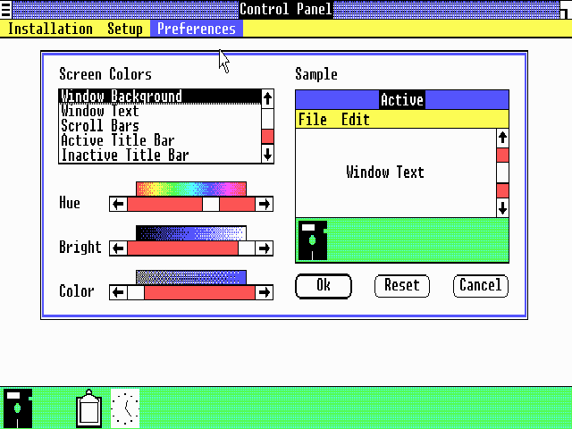
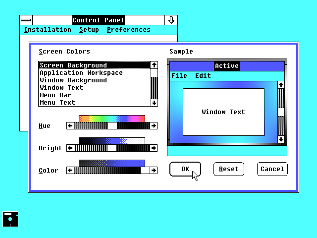
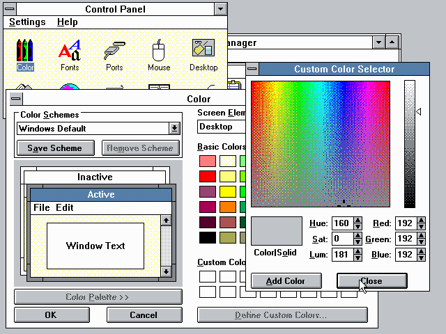
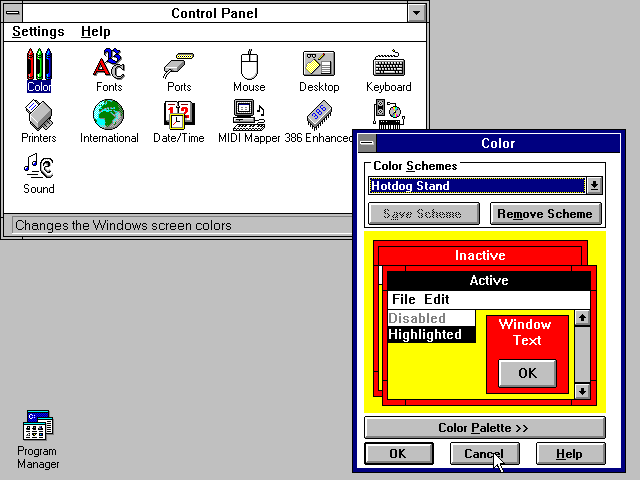
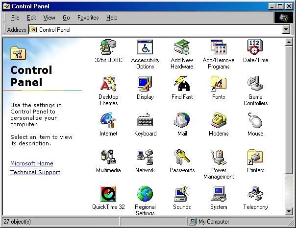
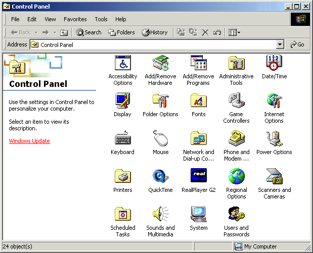
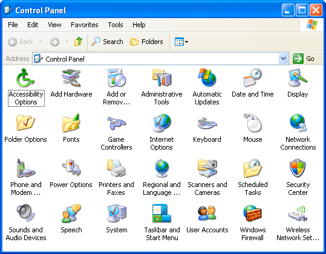

Microsoft Windows Control Panel evolution (1985-2001)
- Windows 1.0 (1985)
- Windows 2.0 (1987)
- Windows 3.0 (1990)
- Windows 3.1 (1992)
- Windows 95 (1995)
- Windows 98 (1998)
- Windows Me (2000)
- Windows XP (2001)
Source: Version Museum